Last updated: 2022-07-15
Checks: 6 1
Knit directory: GitHub-with-RStudio-LICAE/
This reproducible R Markdown analysis was created with workflowr (version 1.7.0). The Checks tab describes the reproducibility checks that were applied when the results were created. The Past versions tab lists the development history.
The R Markdown file has unstaged changes. To know which version of
the R Markdown file created these results, you’ll want to first commit
it to the Git repo. If you’re still working on the analysis, you can
ignore this warning. When you’re finished, you can run
wflow_publish to commit the R Markdown file and build the
HTML.
Great job! The global environment was empty. Objects defined in the global environment can affect the analysis in your R Markdown file in unknown ways. For reproduciblity it’s best to always run the code in an empty environment.
The command set.seed(20220715) was run prior to running
the code in the R Markdown file. Setting a seed ensures that any results
that rely on randomness, e.g. subsampling or permutations, are
reproducible.
Great job! Recording the operating system, R version, and package versions is critical for reproducibility.
Nice! There were no cached chunks for this analysis, so you can be confident that you successfully produced the results during this run.
Great job! Using relative paths to the files within your workflowr project makes it easier to run your code on other machines.
Great! You are using Git for version control. Tracking code development and connecting the code version to the results is critical for reproducibility.
The results in this page were generated with repository version b987135. See the Past versions tab to see a history of the changes made to the R Markdown and HTML files.
Note that you need to be careful to ensure that all relevant files for
the analysis have been committed to Git prior to generating the results
(you can use wflow_publish or
wflow_git_commit). workflowr only checks the R Markdown
file, but you know if there are other scripts or data files that it
depends on. Below is the status of the Git repository when the results
were generated:
Ignored files:
Ignored: .Rproj.user/
Unstaged changes:
Modified: analysis/index.Rmd
Note that any generated files, e.g. HTML, png, CSS, etc., are not included in this status report because it is ok for generated content to have uncommitted changes.
These are the previous versions of the repository in which changes were
made to the R Markdown (analysis/index.Rmd) and HTML
(docs/index.html) files. If you’ve configured a remote Git
repository (see ?wflow_git_remote), click on the hyperlinks
in the table below to view the files as they were in that past version.
| File | Version | Author | Date | Message |
|---|---|---|---|---|
| html | 3623333 | WevertonGomesCosta | 2022-07-15 | Atualized |
| Rmd | e99dbf2 | WevertonGomesCosta | 2022-07-15 | Start workflowr project. |
To avoid any conflict between RStudio and GitHub let’s create your repository first at GitHub.
Go to your GitHub page to create a new repository.
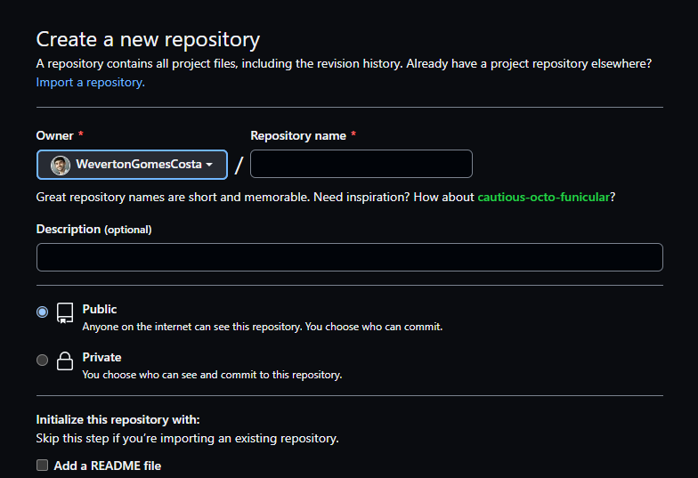
Add a creative name and a description to your repository, please leave as a public option, that will allow you to create a GitHub page to share your work with all of us.
After that we are going to copy the https link of your
repository to clone it with RStudio. Just click at the red button.
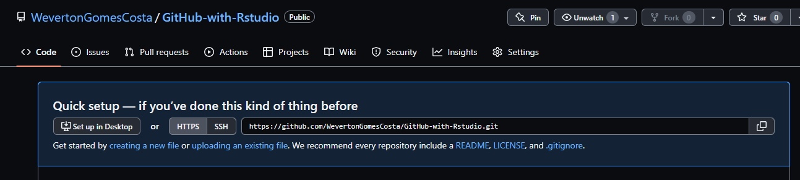
Then let’s move to RStudio.
To clone (Download) your repository from GitHub, click at the
Project button on the top right of RStudio
(1˚) then at New Project....
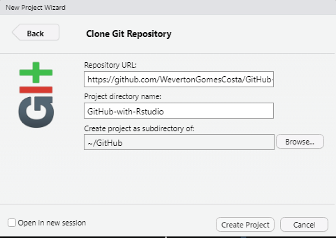
A window named New Project Wizard will appear, select
Version Control, then Git.
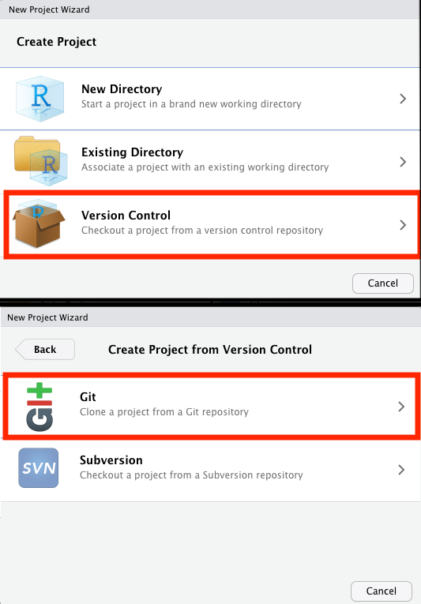
This will open a window with the Clone Git Repository.
Here you will just paste that link that I asked you to copy long time
ago at the Repository URL: window. At the
Create project as subdirectory of: select a directory of
easy access for you, that will make it easier for you to locate it
later.
I suggest you to create a folder at your Documents
to keep your workflowr projects organized.
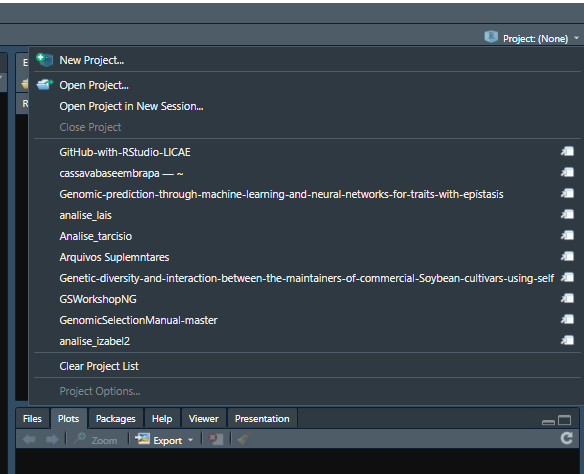
workflowr projectworkflowr package helps you to organize an analysis
aiming to improve the project management, reproducibility, and team
work. It works with the version control software git. Git is another
incredible software that works as an version control, saving all the
changes at your project that you make during the way, allowing to easily
get back to older versions or track your changes or bugs.
So let’s start installing the workflowr package
install.packages("workflowr")Let’s start reading the workflowr package, and then
running its function
library(workflowr)
wflow_git_config(user.name = "YourGitHubUserName", user.email = "YourGitHubEmail")wflow_git_config function will save the yours
information of username and email linked to your GitHub account. That
will be required to allow you to push all your changes at your project.
This configuration will only be necessary once per
computer.
Then we are going to create the workflowr directory
structure with the wflow_start function. Just pay
attention that you already have a main directory for your project, but
if you follow my steps everything will be fine.
wflow_start(directory = ".",
name = "YourRepositoryName",
git = TRUE,
existing = TRUE)Obs.:
The dot
.represents your working directory. It is saying toworkflowrto create the new folders at your working directory, not in a new folder.Use the same
namefor your project as for your GitHub repository.
gitandexistingarguments inform forworkflowrthat you will use git as version control and that the folder already exists, respectively.
wflow_start will provide the following template of sub
directories:
myproject/
|-- .gitignore
|-- .Rprofile
|-- _workflowr.yml
|-- analysis/ # This is the most important folder,
| | it will store all the your R markdown
| | files with your analysis of this project
| |-- about.Rmd
| |-- index.Rmd # This Rmd file will generate the homepage of your
| | website. Here you could write more about the
| | project and link it to the your Rmd files with
| | your analysis
| |-- license.Rmd
| \-- _site.yml # This file is the does all the magic of your website
| layout, theme, navigation bar, ...
|-- code/ # This folder you should store all the code that you think
| | that might not be appropriate to include at your Rmd files
| | or that's functions that you created that you will just call
| | for the analysis using a source function.
| \-- README.md
|-- data/ # Here you will add all your raw data files.
| \-- README.md
|-- docs/ # This folder will save all the html pages created from your Rmd
| files, SHOULD NOT BE EDITED BY THE USER
|-- myproject.Rproj
|-- output/ # Here you will save all the output from your analysis,
| | like data, results, figures,...
| | Even pre-process data files should be saved here.
| \-- README.md
|-- README.mdworkflowr also provide an template format for your Rmd
files that could be used to create yours GitHub pages websites like this
one!!!
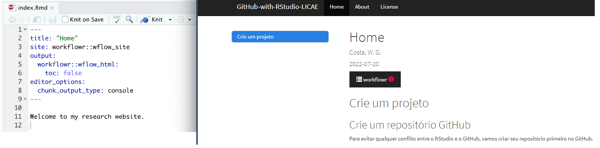
You can look more ideas of how to customize the theme and layout of your project website here.
There are lots of great resources online for learning the
basic tidyverse functions. Here you will
find a lot of cheat sheets of the wonderful world of tidyverse and so
much more.
At the R markdown files your R code must be inside a
code chunks for RStudio to understand as so. So What is a
code chunk?
Here's one ```r dim(iris)[1] 150 5```
but you could also use that in the middle of any phrase as
2 + 2 is 4, all you need to do is to write your code
surrounded by a pair of back-ticks and the letter r like
this.
# Two plus two equals `r 2 + 2`R markdown allows you to create chunks for several programming
languages, like python. In your RStudio there is a +c
button at the menu below your Rmd file name, try it to see which other
type of languages you could apply at a Rmd file.
Pretty critical to learn a few of these, especially these:
| OS X - MAC | Windows | Hotkey |
|---|---|---|
CMD + Option +
I |
Ctrl + Alt +
I |
create chunk |
Shift + CMD +
M |
Shift + Ctrl +
M |
%>% pipe operator |
Option + - |
Alt + - |
<- assignment operator |
CMD + Enter |
Windows + Enter |
submit (run) lines of code in your Rmd or R script to the console. |
magrittr package has several operators very useful for
managing data.
Here is some guides to improve your Rmd writing. You can use headers, give emphasis, create tables, call a figure, add links of useful websites.
workflowrWe will open the index.Rmd file using
wflow_open function
wflow_open("analysis/index.Rmd")At this file you can update the title of the index page, and start writing the main objectives of this repository. Like:
This repository was created to assist my learning experience with GitHub and workflowr.
My first R code at this project will be at this [git hub page](PCA.html)That’s great, but we still do not have the PCA.hmtl
file, so let’s create it with the wflow_open function.
wflow_open("analysis/PCA.Rmd")That should create the PCA.Rmd file, you should be looking for it
now.
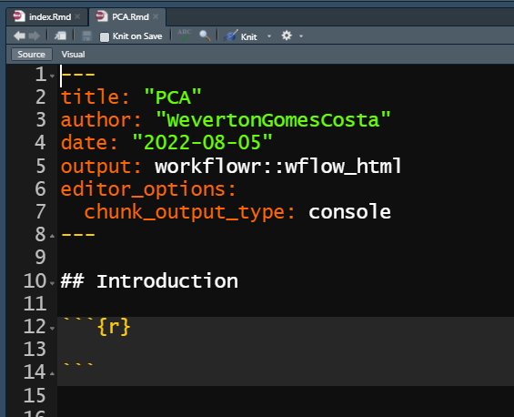
You can update the name to replacing the abbreviation for
Principal Components Analysis, and add a new intro for the
analysis that we are going to do at this R markdown file.
You can follow the example of this website WorkFlowRExample.
As we already have some changes at our project, we can update our
repository in GitHub running the wflow_status and
wflow_publish.
wflow_status will check if there is any changes at
the files of the analysis folder that requires to create
the html pages again, and verify any new/delete/modified files at your
repository. Always comparing with the last version (commit).
wflow_publish will commit (save, take a snapshot)
the changes at the Rmd files at the analysis folder. Then
create or update the html files and figures, and commit these new html
files and figures again.
wflow_status()You should see something like this.
Status of 4 Rmd files
Totals:
3 Unpublished
1 Scratch
The following Rmd files require attention:
Unp analysis/about.Rmd
Unp analysis/index.Rmd
Unp analysis/license.Rmd
Scr analysis/PCA.Rmd
Key: Unp = Unpublished, Scr = Scratch (Untracked)
The current Git status is:
status substatus file
untracked untracked .DS_Store
untracked untracked 2.1 Script Var BLUPs.R
untracked untracked Data_Crosses_Density_chart.txt
untracked untracked Parentais selecionados.xlsxTo publish your html website using wflow_publish you
will need to provide a small message that will be linked to the
git commit function.
wflow_publish(files = "analysis/*.Rmd", message = "Test")Current working directory: /Users/lbd54/Documents/GitHub/CassavaReproductiveBarriers
Building 3 file(s):
Building analysis/about.Rmd
log directory created: /var/folders/33/g0c9br3d0rx_bvhf9jsc0t9mcdw1j5/T//RtmphiTKma/workflowr
Building analysis/index.Rmd
Building analysis/license.Rmd
Summary from wflow_publish
**Step 1: Commit analysis files**
No files to commit
**Step 2: Build HTML files**
Summary from wflow_build
Settings:
combine: "or" clean_fig_files: TRUE
The following were built externally each in their own fresh R session:
docs/about.html
docs/index.html
docs/license.html
Log files saved in /var/folders/33/g0c9br3d0rx_bvhf9jsc0t9mcdw1j5/T//RtmphiTKma/workflowr
**Step 3: Commit HTML files**
Summary from wflow_git_commit
The following was run:
$ git add docs/about.html docs/index.html docs/license.html docs/figure/about.Rmd docs/figure/index.Rmd docs/figure/license.Rmd docs/site_libs docs/.nojekyll
$ git commit -m "Build site."
The following file(s) were included in commit 96ce162:
docs/about.html
docs/index.html
docs/license.htmlHowever, I prefer to create/update the html files using the Knit button, then commit myself. This strategy reduces the number of commits in your repository, which makes easier to find an older version of it. Also the Knit button allows you to see if your website has the configuration that you expected without requiring to commit each time you recreate your website.
You can ask for RStudio to create your html website
pressing the button knit, as showed below.
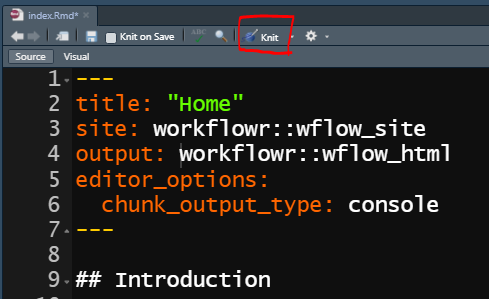
RStudio will create/update your html file and save it at
the docs folder. After you repeat this step for all your
Rmd files and checking if all of them are as you expected, you can
commit this changes to GitHub. See next section.
Git has four main functions:
For a good commiting practice, just commit your updates after you finish your work or part of the project, so you will reduce the number of commits in your project.
Git has it own menu to make easier the interaction between GitHub and RStudio. 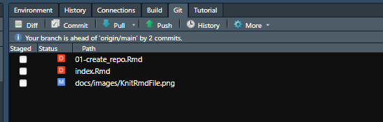
To commit your updates just click at the commit button at this menu.
This will open a window called Rstudio: Review Changes.
At this window, you will be allowed to stage (confirm)
the changes that you made in all the files. You can make this decision
per chunk, you just have to decide if you stage chunk (keep
the changes) or discard chunk (keep the file as it was at
the last commit).
DO NOT FORGET TO WRITE A SHORT MEANINGFUL MESSAGE ABOUT THE NEW CHANGES FOR THIS COMMIT.
Just click commit and then push your new commit to
GitHub clicking at the green arrow. If it is your first
time push a commit to GitHub in your computer, RStudio will ask you your
GitHub user and a password, the password you
should provide is a personal access token. This link
will provide what you need to do to generate one.
Remember to save this token in a safe place, it might be used another time.
Ok, your project is already at the GitHub, but now we need to give instructions to build your website to GitHub, so let’s go to your GitHub repository. GitHub link
At your repository website, click in settings 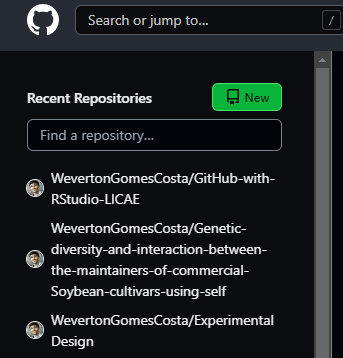
Then select the Pages section at the sidebar menu 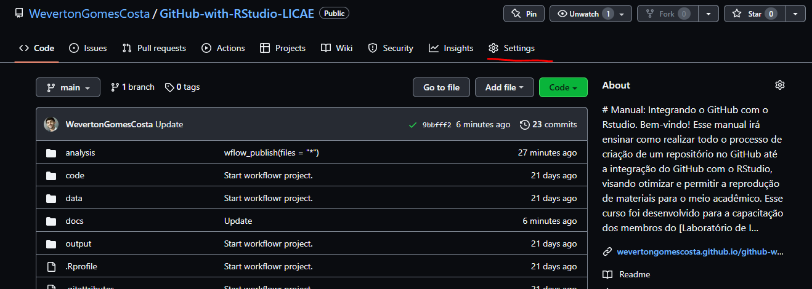
You will see a section about Source, GitHub need to know
which branch and which folder inside this branch is yours html files. So
click at the None button and select
Branch: main, then at the new windows with a folder symbol
select /docs folder, and save.
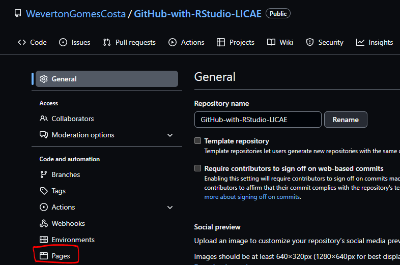
Congratulations your website will be created, just wait some minutes. The link will appear in a window similar to this one.
® Your site is ready to be published at
https://YourUserName.github.io/YourRepositoryName/Copy this link, and get back to your repository website clicking at your repository name.
UserName/RepositoryNameat the right side of the page will have a section called about with a
gear, click at the gear and paste your website
link at the window Website, and save the changes. Now
everyone that have access to your repository could see your project
website just clicking at the link provided at the about section.
sessionInfo()R version 4.1.3 (2022-03-10)
Platform: x86_64-w64-mingw32/x64 (64-bit)
Running under: Windows 10 x64 (build 19042)
Matrix products: default
locale:
[1] LC_COLLATE=Portuguese_Brazil.1252 LC_CTYPE=Portuguese_Brazil.1252
[3] LC_MONETARY=Portuguese_Brazil.1252 LC_NUMERIC=C
[5] LC_TIME=Portuguese_Brazil.1252
attached base packages:
[1] stats graphics grDevices utils datasets methods base
loaded via a namespace (and not attached):
[1] Rcpp_1.0.8.3 rstudioapi_0.13 whisker_0.4 knitr_1.39
[5] magrittr_2.0.3 workflowr_1.7.0 R6_2.5.1 rlang_1.0.2
[9] fastmap_1.1.0 fansi_1.0.3 stringr_1.4.0 tools_4.1.3
[13] xfun_0.30 utf8_1.2.2 cli_3.3.0 git2r_0.30.1
[17] jquerylib_0.1.4 htmltools_0.5.2 ellipsis_0.3.2 rprojroot_2.0.3
[21] yaml_2.3.5 digest_0.6.29 tibble_3.1.7 lifecycle_1.0.1
[25] crayon_1.5.1 later_1.3.0 sass_0.4.1 vctrs_0.4.1
[29] promises_1.2.0.1 fs_1.5.2 glue_1.6.2 evaluate_0.15
[33] rmarkdown_2.14 stringi_1.7.6 bslib_0.3.1 compiler_4.1.3
[37] pillar_1.7.0 jsonlite_1.8.0 httpuv_1.6.5 pkgconfig_2.0.3